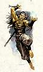
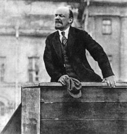
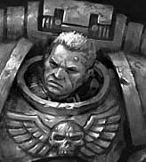

Forums galactiques > Taverne galactique : lieu de discussion informel > le trophée Mac
Pages : 1 2
Mac Polar23/05 ETU 22:39 | Salut manant, voilà ton seigneur. Je suis Mac Polar, et ce soir est lancé le trophée Mac. Il y aura des morts, il y aura du sang. Il va falloir se battre. Mais la récompense est immense. Des années galactiques de travail. Je fixerai demain le premier objectif à atteindre. Le premier qui le réalisera se verra attribuer la récompense de 1 000 000 de métaux. Amitiés Maccéennes, Mac Polar |
Justicar 24/05 ETU 00:06 | Cette attitude snobinarde me déplait Mac Polar. Cependant quel est ce trophé dont vous parlé ? |
| kenashin  24/05 ETU 10:48 | moi aussi j'aimerais savoir quelle es le trophée ? |
Mac Polar24/05 ETU 16:28 | Mac Polar se fait vieux. Le temps a passé, et il sent des douleurs dans le dos, il a de l'arthrite. Il a donc décidé de prendre sa retraite. Mais sa fortune est immense, son surnom officieux est devenu " roi du métal". Et surtout, son péché mignon, c'est le sport, la lutte, l'affrontement. Pour trouver un digne héritier, Mac Polar met en place le trophée Mac. Je veux une liste de concurrents inscrits. Donnez votre nom sur ce sujet, cela suffira. Voici le fonctionnement de la chose. Vous allez devoir conquérir une planète, dont je vous donnerai le nom demain. Celui qui obtient cette planète et la garde plus de 24 heures gagne 1 million de métaux. Chaque nouvelle personne à conquerir cette planète gagnera ce que ma rente m'a donné entre temps. le minimum de 1 million de métaux est garanti. Je rajouterai selon les circonstances des bonus, qui pourront dépasser de loin cette somme de base. Vous pouvez envoyer tous vos espions pour vérifier que j'ai bien la somme promise. Amitiés Maccéennes, Mac Polar |
sous-cdt Marcos 24/05 ETU 17:30 | Citoyen Mac Polar ! Je vois que vous avez perdu l'entendement ! N'avez vous pas percu les objectifs que nous nous devions de mener à bout : triompher des errances de vieux fous autocrates se croyant investis d'un pouvoir sur leur prétendu cours de manants..... Je vois que vous organisé vous même des dîners de cons et autres chasses à court.....J'espère que vous avez des obligations dans d'autres vies pour en arrivé à de telles extrémitées pour vous divertir ! Je ne cotionne, pour ma part, en aucun cas ce type de chasse à l'homme, de surcroit quand la proie est consentente, ne serait ce pas un suicide organisé, dans ce cas demandé aux "Dieux" de reprendre vos "biens" ! |
Mac Polar24/05 ETU 18:00 | inscrivez-vous au lieu de discuter, il ne s'agit pas d'une chasse à l'homme, mais d'un beau tournoi de chevalerie. Amitiés Maccéennes, Mac Polar |
Tansoux24/05 ETU 18:08 | je pariticipe au tournoi! |
Nanovitch 24/05 ETU 18:15 | Je m'inscris si ce concours ne se réserve qu'aux gentlemen dans le cadre d'une guerre pacifique, cloisonnée sur une seule planète. |
Mac Polar24/05 ETU 18:16 | C'est l'esprit de la chose. Amitiés Maccéenes, Mac Polar |
Justicar24/05 ETU 18:24 | Ce concourt ne m'interesse pas. |
Alcibiade24/05 ETU 18:29 | Je m'inscris officiellement à ce tournoi bien que les marchands que nous sommes aurons du mal face aux autres... Mais le capitalisme vaincra... l'argent appelant l'argent... |
Mac Polar24/05 ETU 18:57 | Le snobinard ici, c'est toi Justicar |
skull24/05 ETU 19:58 | Pourquoi pas! Ca pourrait rajouter du piment! Je m'inscrit! |
Justicar24/05 ETU 20:18 | j'ai dit que sa ne m'interesse pas, car au début j'ai dit que j'étais intéressé, ni plus, ni moins. |
Mac Polar24/05 ETU 21:03 | Chers amis du Trophée, au fond de cette salle obscure où se trament des projets lumineux, je vais vous donner les clefs de la quête à venir. Au fond du système 1, après le soleil noir de Byrhamane, se trouve une planète peu défendue. Cette planète fut autrefois riche et resplendissante. On raconterait qu'un grand homme du nom de Mac Polar l'a fait prospérer en son temps. Mais aujourd'hui le brave est fatigué, il se vautre ignoblement dans sa richesse dépravée. le leem dégouline de ses vêtements, sueur malsaine. Son coeur prisonnier de métal ne bat plus que pour le diamant, qui seul lui donne l'énergie pour vivre. L'homme malheureux ne croit plus à son futur, sans surprise. Vous ne pouvez supporter la vue de cet homme vil et répugnant. Il faut que vous le sauviez malgré lui. La légende dit encore que celui qui le sauvera de la déchéance se verra récompensé. Brébusaque, le chancelier, parle à ce sujet d'un million de métaux. Tentez votre chance. Si vous conquérez Mac, la planète centre d'un empire de 130 planètes, et que vous la conservez 24 heures, la récompense vous sera versée. En effet, la promesse fut scellée dans la cire de Fuissandre, qui punit de mort quiconque manque à sa parole. Attention! il ne faut pas changer le nom de la planète Mac, le sortilège serait rompu. On dit aussi que quiconque conquiert cette planète devient aussi détestable que Mac Polar lui-même. Le gain est plus fort. L'installation prolongée d'un seul chevalier galactique sur Mac ne sortirait donc que temporairement la planète de sa léthargie. Tout nouveau chevalier galactique conquérant ultérieurement la planète et la tenant 24 heures serait à nouveau récompensé de la même manière. On parle même de récompense ultime. Bonne Chance, chevaliers galactiques! Que le plus valeureux triomphe. Amitiés Maccéennes, Mac Polar |
Arkk 24/05 ETU 21:22 | Nobles représentants. Ce genre d'affrontement est incompatible avec mes principes. Je n'y participerai donc pas. Néanmoins, si une telle joute peut calmer les tensions géopolitique, je dois avouer que je la cautionne, à la condition que tous les militaires et pilotes de navires de guerre engagés dans la bataille au nom de leur patrie soient volontaires et conscients des risques. Que le meilleur gagne. |
| Redsamourai  24/05 ETU 22:55 | Nous nous inscrivons, bien qu'il y ai beaucoup de chances pour que nous ne participions pas au jeu du traitre. |
| Abanon  25/05 ETU 00:06 | bah pourquoi pas... |
Tatzoof 25/05 ETU 18:13 | pas encore assez fort je suis, je le craint !!! |
lorie25/05 ETU 20:15 | ce trophée minteresse fort je pourrais prouver a mes fans que je ne suis pas une simple fillette nest ce pas Forest?? 1 millions de maetaux est le rève je minscris sur le chant. |
Pages : 1 2
Forums galactiques > Taverne galactique : lieu de discussion informel > le trophée Mac